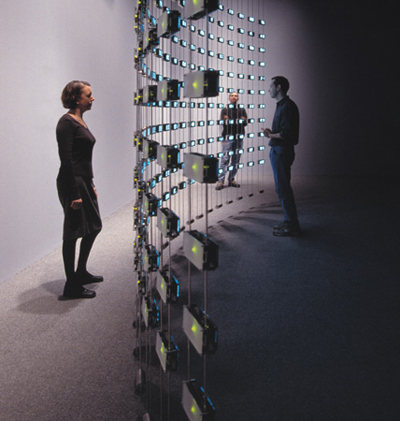

|
By Jack Fischer
Mercury News A problem with understanding how high tech is changing our lives is that key parts of the changes are hard to see. People come to Silicon Valley in search of what the valley has helped wrought, and there's nothing to show them. Where do you go to see the Internet? A mesmerizing answer to that question just went on exhibit at the San Jose Museum of Art, which has unveiled "Listening Post" (2001) by Ben Rubin and Mark Hansen. The work is a first taste of what we can expect in August when "ZeroOne San Jose: A Global Festival of Art on the Edge" brings its mix of art and technology to downtown.
A curved, curtain-like wall of more than 200 LED screens and eight speakers, "Listening Post" gathers in near real-time conversations from thousands of Internet chat rooms and then displays snippets of them. They are accompanied by a synthesized voice reading the snippets aloud and by tonal music that, together, make "Listening Post" an ever-changing tone poem of humanity.  The work is divided into six movements, with the presentation varying in each. Sometimes the screens all flash the same message; other times each displays a different one. Either way, they scroll and flash at a rate that makes all of it impossible to take in, lulling and roiling the viewer. Sometimes, the piece will search for a single opening phrase such as "I am . . ." or "I like . . ." "I like skinny chicks," "I like them shaved," "I'm so bored," "I'm rather rare," and on and on in an endless, poignant procession. The effect is by turns voyeuristic, titillating and finally exhausting and a bit sad, as a staggering breadth of actual humanity pours its thoughts into the ether, where they linger momentarily before vanishing without a trace. It's about desire for connection and the feeble, too-often foiled form it takes in the contemporary world. There's precedent for this, of course. Art from Dada through composer John Cage has toyed with presenting random words for the patterns they make. The difference here is in what a broad representative sample this is, making for a sort of impressionistic sociology, as well as art. Art does its best with technology when the technology is in its service, rather than the other way around. "Listening Post," with its elegant presentation and focus on content, fits the bill. My only reservation is its age. "ZeroOne" (which will be here from Aug. 7 through 13) is being billed as a biennial event, which typically suggests a survey of what is most current in art. At nearly six years old, "Listening Post" is a technological old master. Presumably, most of what we see in August will be newer. Contact Jack Fischer at jfischer@ mercurynews.com or (408) 920-5440.
http://www.mercurynews.com/mld/mercurynews/entertainment/visual_arts/14793769.htm |